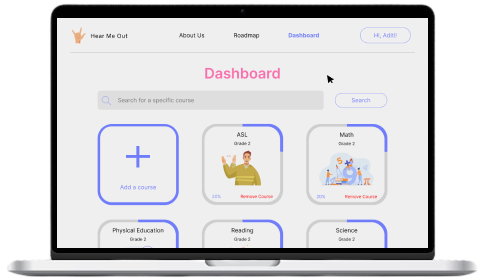

Hear Me Out
Remote education for deaf students
My Role(s)
UX Designer
External Links
Figma Protype
Introduction
Sign language is a natural language that has the same properties as a spoken language. It is the main language that people who are mute
or deaf use. It is not spoken, so it relies heavily on body language and facial expressions. Because it’s its own language, it has its
own word order and word formation. And just like most languages, different countries have their own variation of it. I’ll be focusing on
American Sign Language (ASL).
According to the World Health Organization (WHO), roughly 20% of the global population is either deaf or hard of hearing, and the most common
way of communicating is through sign language. To put this in perspective:
 |
||
| 20% of the population is over 1.5 billion people. | WHO estimates that this number could increase to 2.5 billion people by the year 2050. | The overall annual cost of unaddressed hearing loss is about $980 billion. This number includes health sector costs, the costs of educational support, and the overall loss of productivity in society. |
According to the US Department of Education:
"Because deafness is a low incidence disability, there is not widespread understanding of its educational implications, even among special educators."
Current Solutions
There are a few options for education that attempt to solve this issue. People who are deaf can go to a specific school to learn sign language with other deaf or
hard-of-hearing peers. However, there aren’t many schools like this, so people may need to travel more.
People also have the option to go to a mainstream school, but this would set their education back. If the student is a child, then they won’t develop a proper
foundation of sign language and can’t communicate with others without educational support.
If going to a mainstream school is the only option, then people can learn sign language online. Most of the lessons online use recorded videos to teach. This
helps to learn body language, but it doesn’t provide feedback to people learning. They won’t know if they’re doing the signs correctly or if other deaf people can
interpret what they’re trying to say.
People can also learn sign through apps. However, this has the same issues as with online learning. Some apps even use pictures or animation to teach sign, but this
won’t help learners understand body language, facial expressions, or the contexts in which they use the signs.
My Solution
Now, hear me out, what if we can provide an online platform to help students learn sign language and keep up with school?
I attempted to tackle this issue by providing remote education for deaf and hard-of-hearing students. This application provides courses that are tailored to uphold
the standards set by the US Department of Education for each grade level to ensure that students are prepared for higher education while still giving them the proper
educational support to succeed.
Approach
I wanted this application to be used by young students, so the screen needed to be big enough for them to interact with. Thus, I settled with a
desktop application rather than a mobile app. I looked at Dribbble for inspiration and found that a lot of homepages acted as a landing point for
users to navigate to different parts of the site. As such, I didn’t want to include information other than the points of navigation and a brief
tagline about the site.
Next, I decided on the aforementioned points of navigation. The About Us tab would give users more information about the site. The Roadmap tab
would allow students to see the courses that were recommended based on each grade level. Having a roadmap would set a clear standard of what was
expected of them at each grade level. I also wanted this site to be self-paced, so users could add any course from the Roadmap to their Dashboard.
I wanted the Dashboard to be simple because there was a lot of course information that needed to be displayed. If users click on a course, they
could view more information on the course contents and their progress for each topic. They could also search for a specific course from the search
bar and add it to their dashboard.
Lastly, I wanted to implement a login feature so that students could save their progress. In terms of design, I relied heavily on the principles
outlined by Jill Butler in their book, Universal Principles of Design.
The Design
After some peer feedback, I drastically changed the visual design of the site. The original red-yellow palette seemed too formal, so I changed it
to a purple-blue with white and pink highlights, which made the site look softer overall. I also used illustrations instead of actual pictures to
target the site better towards younger demographics. The Login page has a similar structure in both versions of my design. The main thing I
changed was the aesthetics.
| V1 Login | V2 Login |
|---|---|
In my initial design, I had the About Us section underneath the homepage, so that users could scroll down to read more about the site. While design-wise, this was alright, it was important for me to note that learning more about the site may not be something my target demographic cares about immediately upon returning to the site. To fix this, I made a separate tab for the About Us page. It minimized the amount of information shown on the Home page, and it’s something that can be accessed only if users want to know more.
| V1 Home and About page | V2 Home page | V2 About page |
|---|---|---|
In V1, I added a tab in the header to learn ASL. After some feedback, the Learn ASL tab was merged with the course curriculum in the Roadmap. Having an ASL course in each grade helps to develop the user’s skills gradually along with their other courses. The lesson videos also use sign language to explain concepts, so it’s another way to reinforce what they’ve learned.
The curriculum Roadmap was made to look like an actual roadmap. Having a visual guide of the classes to take drastically increased readability. The information of each grade is progressively disclosed whenever the user clicks on a grade level. In other words, the user won’t get the information unless they ask for it. I separated the grades using a grid format, which makes it easier to read.
| V1 Roadmap | V2 Roadmap |
|---|---|
Each course in the Dashboard has a progress bar around it to show how much the user has completed. As per some peer feedback, I added the percentage completed at the bottom left corner to give additional information to the user’s progress in each course.
| V1 Dashboard | V2 Dashboard |
|---|---|
When a user clicks on a course, they’ll be taken to a page that dissects it into different units. Each unit has a short description of what will be covered and a progress bar to show how much the user completed. [add v2 units]
| V1 Units page |
|---|
Once users click on a unit, they are shown the Lesson page. Here, they’ll see a list of lessons on the left side and a video on the right. The video explains the lessons in sign language to help users understand the material better. Additionally, the lesson is written underneath the video, so users can refer to it at any time. The video and lessons have a pink bar underneath to indicate progress. The lessons that are completed are lower in opacity, and the current lesson is highlighted to make it stand out more. [add lesson]
| V1 Lesson page | V2 Lesson page |
|---|---|
If a user searches for a course, they are shown the course in every grade level, as specified in my initial design. Users could click on it to see information about the course, and have the option to add it to their Dashboard.
| V1 Search | V2 Search |
|---|---|
Issues
While I am satisfied with the final product, there are still many issues with the prototype that I would like to address.
- The courses in the Roadmap had the same name regardless of grade. I noticed this issue before I submitted the prototype, and I tried my best to fix this. Sadly, I could not find a way to do so without making a component for every grade level.
- You can click on multiple grades in the Roadmap and have multiple pop-ups overlap. Again, I noticed this early-on, but could not find a way to fix this in Figma.
- If a course is removed in the Roadmap, then it stays in the Dashboard. Because this is a proof-of-concept, the courses in the Dashboard are static and cannot be changed. The idea is that users could add courses from the Roadmap or through the search bar in the Dashboard.
- The progress bars for each course in the Courses page could be pink. Throughout the site, any progress bar that was shown was pink, so making the courses one pink as well would add to the consistency of the site.
- There’s no indication that I’ve completed a grade. Having some visual indication of completion (whether in a sidebar or in the Roadmap itself) would improve the usability of the site. Users wouldn’t need to check if they’ve completed a course by adding it to their dashboard.
- When users log out, log in, and go back to that page, the logout prompt will stay until the user closes it. I think that if I had more time, I would be able to fix this.
- The logout prompt is too small. This was something that stumped me as well. I need to look into this further in the future.
- The video in the Lessons page doesn’t have captions or a transcript. Having captions would improve the way users would understand the material. If the user is a second grader, for instance, they may not know enough sign language to understand. I included the lesson plan underneath as an additional form of learning, but having captions would provide extra assistance for the video.
Final Thoughts
While I believe there was a drastic improvement between my initial and final designs, there’s still room for improvement. Many of my struggles came from my lack of experience with Figma, which can be fixed with some more practice. Other struggles came from designing itself. While Butler's book helped me greatly with design functionality, I think I need to be more creative with design aesthetics. I also struggled with organizing information in a way that was informative without it being overwhelming. In particular, I struggled with the aesthetic-usability effect Butler discusses. Some elements of my site seemed too simple, and in doing so it may be confusing for users on what to do. I used a lot of the skills learned in the early development stages of the project. I sketched out ideas and created low-fidelity prototypes before committing to Figma. This really helped me with planning out the entire site and navigation architecture.
Next Steps
Now that the design has been completed, the next step would be to code the functionality.
Demo
Here's a video that shows me going through the final version of my prototype. You can go through the prototype on your own as well using the link
at the top of the page, or through
here.
References
Alexander, L. (2020, August 26). Deaf students education services; Policy Guidance, U.S.Department of Education. Office for Civil Rights. Retrieved March 24, 2023, from https://www2.ed.gov/about/offices/list/ocr/docs/hq9806.html
Butler, J., Holden, K., & Lidwell, W. (2010). Universal principles of design: 125 ways to enhance usability, influence perception, increase appeal, make better design decisions, and teach through design. Rockport Publishers.
Dribbble. (n.d.). Explore the world's leading design portfolios. Dribbble. Retrieved March 24, 2023, from https://dribbble.com/
World Health Organization. (n.d.). Deafness and hearing loss. World Health Organization. Retrieved March 24, 2023, from https://www.who.int/health-topics/hearing-loss
Aditi Kisara